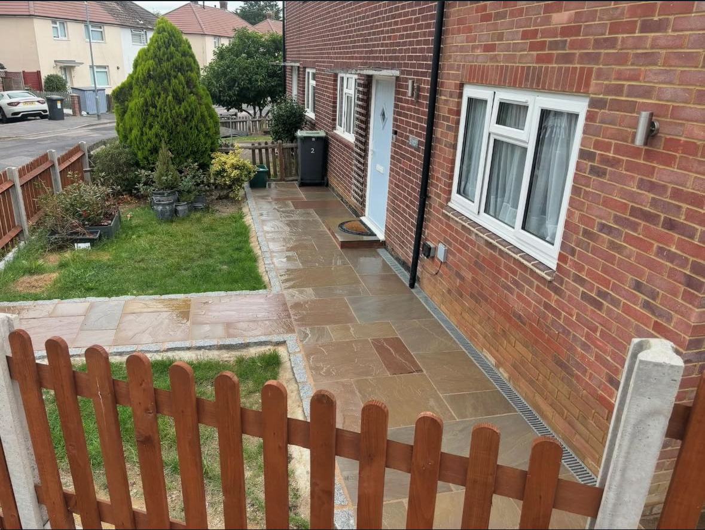
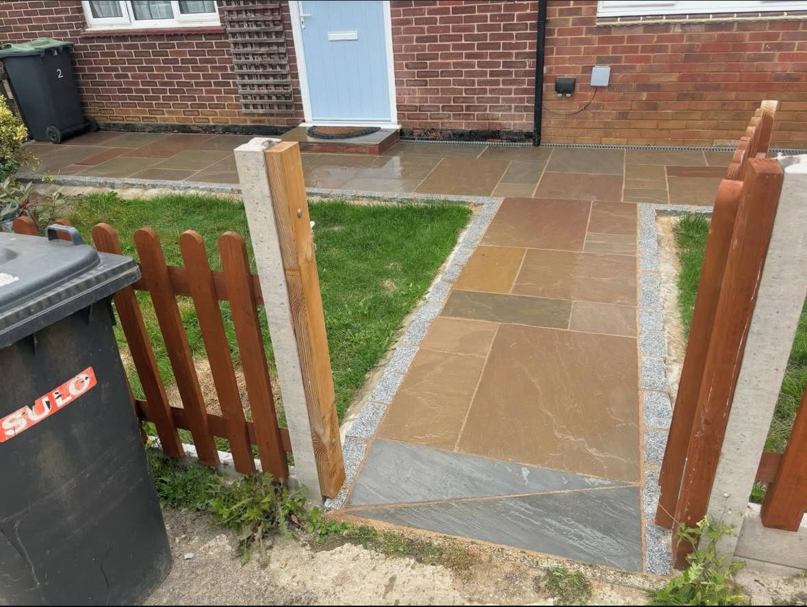

Sevenoaks Groundworks: Built to Last
Everything above ground is only as good as what's beneath it. Groundworks done properly, with correct excavation, a solid sub-base and well-prepared drainage, means the finished surface stays level, doesn't crack, and lasts for decades. Cut corners here and you'll be dealing with subsidence, ponding and failed surfaces within a few years.
Real Developments Ltd is a groundworks specialist based in Sevenoaks, Kent. With 25 years of hands-on experience, we carry out concrete foundations, paving and drainage projects across Sevenoaks, Otford, Sundridge, Kemsing, Ightham, Westerham and the surrounding villages, for homeowners and commercial clients who want it done right first time.
Whether you're in Sevenoaks town itself or out in one of the surrounding villages, we know the local soil conditions, typical drainage challenges and planning requirements that affect groundworks in this part of Kent. That local knowledge shows in the quality and reliability of every job we complete.




What Our Groundworks Service Covers
Concrete Foundations
Shed slabs, summer house bases, garage pads, strip and raft foundations for extensions and new builds. We dig, form and pour to the correct depth and specification, giving you a solid, level base that lasts for decades without movement or cracking.
Sandstone & Porcelain Paving
Natural sandstone and porcelain paving for patios, driveways and pathways. Every job starts with a properly excavated and compacted sub-base with correct drainage falls, because the quality of the finish depends entirely on what's underneath it.
Block Paving
Block paving driveways and paths that are built to handle vehicle loading without rocking or sinking. We prepare the ground correctly, lay a compacted hardcore and sharp sand bed to specification, and set each block level and tight for a surface that holds its shape for years.
Drainage & Sub-base Preparation
Proper drainage is the difference between a surface that lasts and one that fails. We install soakaways, channel drainage and French drains where required, and prepare sub-bases to the correct depth and compaction spec for the intended loading and surface type.
Every groundworks project starts with a site assessment. We look at soil conditions, drainage, load requirements and levels before we price anything. This means the quote is accurate and the finished job is right for its purpose and location.
We're fully insured, Checkatrade verified, and provide a full guarantee on all our work. Call Ryan on 07435 442212 or use our online enquiry form for a free, no-obligation quote.